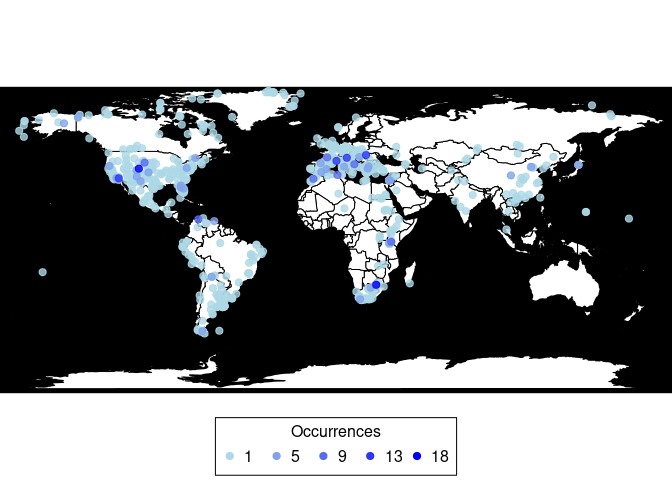
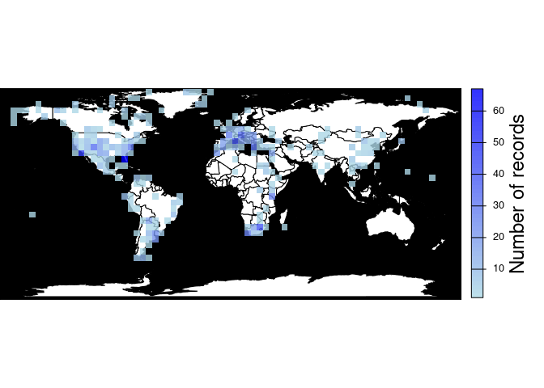
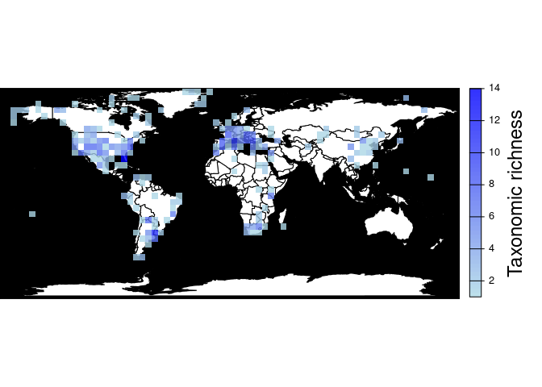
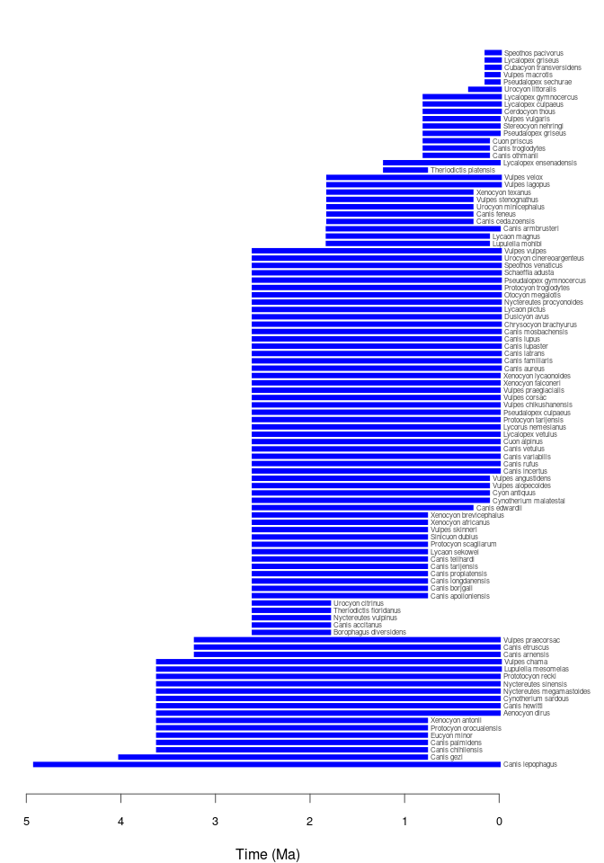
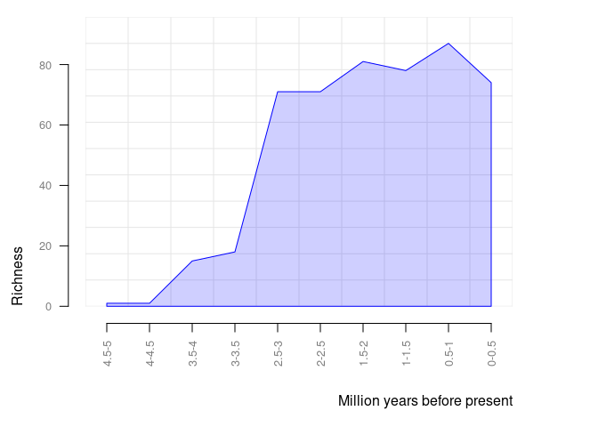
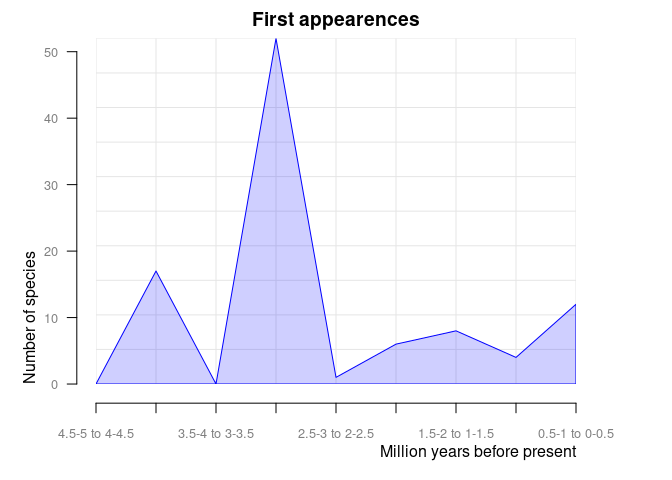
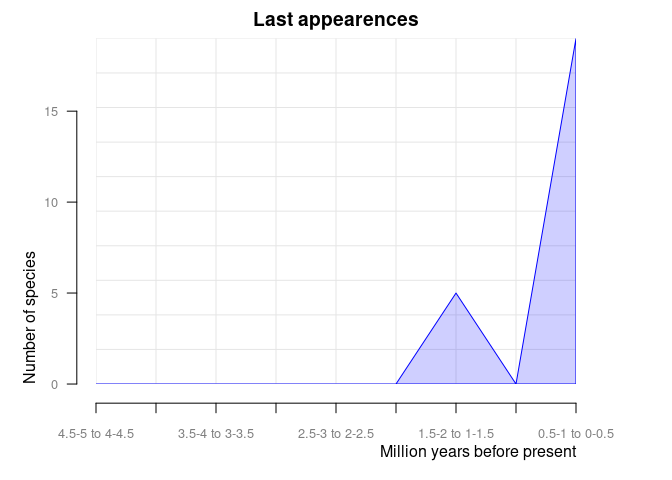
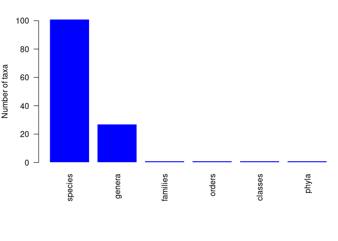
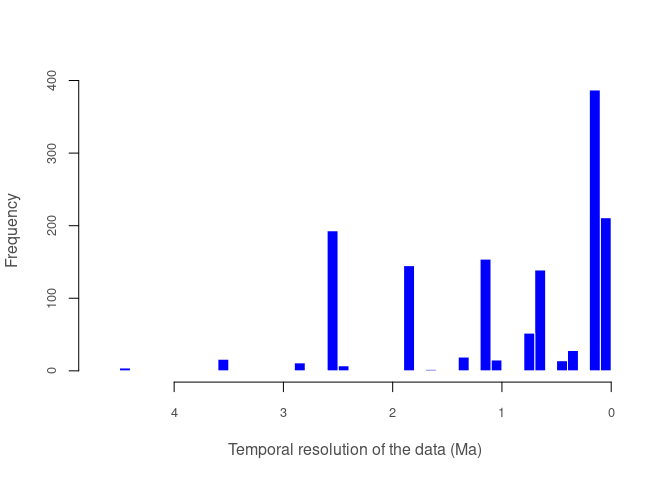

paleobioDB is a package for downloading, visualizing and processing data from the Paleobiology Database.
Installation
Install the latest release from CRAN:
install.packages("paleobioDB")Alternatively, you can install the development version of paleobioDB from GitHub with:
# install.packages("devtools")
devtools::install_github("ropensci/paleobioDB")General overview
paleobioDB provides functions that wrap most endpoints of the PaleobioDB API, and allows visualizing and processing the fossil data. The API documentation for the Paleobiology Database can be found here.
Download fossil occurrences from PaleobioDB
pbdb_occurrences
Here is an example of how to download all fossil occurrences that belong to the family Canidae in the Quaternary:
library(paleobioDB)
canidae <- pbdb_occurrences(
base_name = "canidae",
interval = "Quaternary",
show = c("coords", "classext"),
vocab = "pbdb",
limit = "all"
)
dim(canidae)
#> [1] 1401 28
head(canidae, 3)
#> occurrence_no record_type collection_no identified_name identified_rank
#> 1 150070 occ 13293 Cuon sp. genus
#> 2 192926 occ 19617 Canis edwardii species
#> 3 192927 occ 19617 Canis armbrusteri species
#> identified_no accepted_name accepted_rank accepted_no early_interval
#> 1 41204 Cuon genus 41204 Middle Pleistocene
#> 2 44838 Canis edwardii species 44838 Irvingtonian
#> 3 44827 Canis armbrusteri species 44827 Irvingtonian
#> late_interval max_ma min_ma reference_no lng lat phylum
#> 1 Late Pleistocene 0.774 0.0117 4412 111.5667 22.76667 Chordata
#> 2 <NA> 1.400 0.2100 2673 -112.4000 35.70000 Chordata
#> 3 <NA> 1.400 0.2100 52058 -112.4000 35.70000 Chordata
#> phylum_no class class_no order order_no family family_no genus
#> 1 33815 Mammalia 36651 Carnivora 36905 Canidae 41189 Cuon
#> 2 33815 Mammalia 36651 Carnivora 36905 Canidae 41189 Canis
#> 3 33815 Mammalia 36651 Carnivora 36905 Canidae 41189 Canis
#> genus_no reid_no difference
#> 1 41204 <NA> <NA>
#> 2 41198 8376 <NA>
#> 3 41198 30222 <NA>Note that if the plotting and analysis functions of this package are going to be used (as demonstrated in the sections below), it is necessary to specify the parameter show = c("coords", "classext") in the pbdb_occurrences() function. This returns taxonomic and geographic information for the occurrences that is required by these functions.
Caution with raw data
Beware of synonyms and errors, they could twist your estimations about species richness, evolutionary and extinction rates, etc. paleobioDB users should be critical about the raw data downloaded from the database and filter the data before analyzing it.
For instance, when using base_name for downloading information with the function pbdb_occurrences(), check out the synonyms and errors that could appear in accepted_name, genus, etc. If they are not corrected or eliminated, they will increase the richness of genera.
Map the fossil records
pbdb_map
Plots a map showing fossil occurrences and invisibly returns a data frame with the number of occurrences per coordinate.
(pbdb_map(canidae))
#> lng lat Occur
#> -70.583885.-52.415833 -70.583885 -52.415833 1
#> -69.583336.-52.083332 -69.583336 -52.083332 1
#> -70.060555.-52.054722 -70.060555 -52.054722 1
#> -60.46299.-51.829769 -60.462990 -51.829769 1
#> -70.174446.-51.74778 -70.174446 -51.747780 1
....
#> 11.25.45.416668 11.250000 45.416668 12
#> 22.033333.46.966667 22.033333 46.966667 12
#> -117.33.900002 -117.000000 33.900002 13
#> 5.395.43.686111 5.395000 43.686111 14
#> -105.699997.39.299999 -105.699997 39.299999 15
#> 27.7208.-26.016701 27.720800 -26.016701 18
pbdb_map_occur
Returns a map and a raster object with the sampling effort (number of fossil records per cell). The user can change the resolution of the cells.
pbdb_map_occur(canidae, res = 5)
pbdb_map_richness
Returns a map and a raster object with the number of different species, genera, family, etc. per cell. As with pbdb_map_occur(), the user can change the resolution of the cells.
pbdb_map_richness(canidae, res = 5, rank = "species")
#> class : SpatRaster
#> size : 34, 74, 1 (nrow, ncol, nlyr)
#> resolution : 5, 5 (x, y)
#> extent : -180, 190, -85.19218, 84.80782 (xmin, xmax, ymin, ymax)
#> coord. ref. : lon/lat WGS 84
#> source(s) : memory
#> name : sum
#> min value : 1
#> max value : 14If you do not need the plot and you are only interested in obtaining a richness raster for some other purposes, you could use the argument do_plot = FALSE. For instance, this returns the same raster object as above (a SpatRaster object from the terra package) without plotting it:
pbdb_map_richness(canidae, res = 5, rank = "species", do_plot = FALSE)
#> class : SpatRaster
#> size : 34, 74, 1 (nrow, ncol, nlyr)
#> resolution : 5, 5 (x, y)
#> extent : -180, 190, -85.19218, 84.80782 (xmin, xmax, ymin, ymax)
#> coord. ref. : lon/lat WGS 84
#> source(s) : memory
#> name : sum
#> min value : 1
#> max value : 14The do_plot argument is available in all the functions in the package that produce a plot and return an object. This means that the plot is optional in all the other plotting functions that are described here. Check their documentation for more details.
Explore your fossil data
pbdb_temp_range
Returns a data frame and a plot with the time span of the species, genera, families, etc. in your query. Make sure that enough vertical space is provided in the graphics device used to do the plotting if there are many taxa of the specified rank in your data set.
pbdb_temp_range(canidae, rank = "species")
#> max min
#> Canis lepophagus 4.7000 0.0140
#> Canis gezi 3.8000 0.4000
#> Canis chihliensis 3.6000 0.7740
#> Canis palmidens 3.6000 0.7740
#> Eucyon minor 3.6000 0.7740
....
#> Pseudalopex sechurae 0.1290 0.0117
#> Vulpes macrotis 0.1290 0.0117
#> Cubacyon transversidens 0.1290 0.0000
#> Lycalopex griseus 0.1290 0.0000
#> Speothos pacivorus 0.1290 0.0000
#> Dusicyon australis 0.0117 0.0000
pbdb_richness
Returns a data frame and a plot with the number of species (or genera, families, etc.) across time. You should set the temporal extent and the temporal resolution for the steps.
pbdb_richness(canidae, rank = "species", temporal_extent = c(0, 5), res = 0.5)
pbdb_orig_ext
Returns a data frame and a plot with the number of appearances and dissapearances of taxa between consecutive time intervals in the data you provide. These time intervals are defined by the temporal extent (temporal_extent) and resolution (res) arguments. This is another way of visualizing the same information that is shown in the pbdb_temp_range() plot. orig_ext = 1 plots new appearances:
pbdb_orig_ext(
canidae,
rank = "species",
orig_ext = 1, temporal_extent = c(0, 5), res = 0.5
)
#> new ext
#> 0.5-1 to 0-0.5 12 17
#> 1-1.5 to 0.5-1 4 0
#> 1.5-2 to 1-1.5 8 5
#> 2-2.5 to 1.5-2 6 0
#> 2.5-3 to 2-2.5 1 0
#> 3-3.5 to 2.5-3 52 0
#> 3.5-4 to 3-3.5 0 0
#> 4-4.5 to 3.5-4 17 0
#> 4.5-5 to 4-4.5 0 0And orig_ext = 2 plots disappearances of taxa between time intervals in the provided data frame.
pbdb_orig_ext(
canidae,
rank = "species",
orig_ext = 2, temporal_extent = c(0, 5), res = 0.5
)
pbdb_subtaxa
Returns a plot and a data frame with the number of species, genera, families, etc. in your dataset.
pbdb_subtaxa(canidae)
pbdb_temporal_resolution
Returns a plot and a list with a summary of the temporal resolution of the fossil records.
pbdb_temporal_resolution(canidae)
#> $summary
#> Min. 1st Qu. Median Mean 3rd Qu. Max.
#> 0.0117 0.1173 0.6450 0.9392 1.8060 4.6860
#>
#> $temporal_resolution
#> [1] 0.7623 1.1900 1.1900 1.1900 4.4900 0.7800 0.7800 0.7800 0.7800 4.4900
....
#> [1351] 0.3883 0.3883 0.3883 0.1173 1.3500 0.1173 0.3883 2.5683 0.1173 0.3883
#> [1361] 0.1173 2.5683 0.3883 0.6450 0.6450 1.8060 2.8260 1.1900 2.5683 2.5683
#> [1371] 2.5683 0.1173 2.5683 2.5683 2.5683 2.5683 0.0117 0.0117 1.0260 0.6450
#> [1381] 0.0117 0.7623 0.6450 0.6450 0.6450 0.1173 0.1173 0.1173 0.1290 2.5683
#> [1391] 2.5683 0.7623 0.1173 2.5683 2.5683 2.5683 0.1173 2.5683 2.5683 1.8060
#> [1401] 1.8060Meta
Please report any issues or bugs.
License: GPL-2
#> Para citar o pacote 'paleobioDB' em publicações use:
#>
#> Varela S, González-Hernández J, Sgarbi LF, Marshall C, Uhen MD,
#> Peters S, McClennen M (2015). "paleobioDB: an R package for
#> downloading, visualizing and processing data from the Paleobiology
#> Database." _Ecography_, *38*(4), 419-425. doi:10.1111/ecog.01154
#> <https://doi.org/10.1111/ecog.01154>.
#>
#> Uma entrada BibTeX para usuários(as) de LaTeX é
#>
#> @Article{,
#> title = {paleobioDB: an R package for downloading, visualizing and processing data from the Paleobiology Database.},
#> author = {Sara Varela and Javier González-Hernández and Luciano F. Sgarbi and Charles Marshall and Mark D. Uhen and Shanan Peters and Michael McClennen},
#> journal = {Ecography},
#> year = {2015},
#> volume = {38},
#> number = {4},
#> pages = {419-425},
#> doi = {10.1111/ecog.01154},
#> }This package is part of the rOpenSci project.